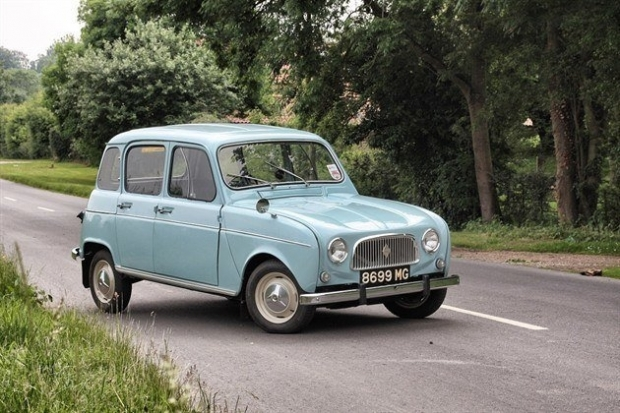

Перший Renault

Перший автомобіль, випущений під брендом "Renault", відомий як Renault Type A. Цей автомобіль
був представлений у 1898 році. Він був створений Луї Рено, засновником компанії Renault.
Renault Type A був невеликим автомобілем з одним циліндром і об'ємом двигуна 0,7 літра. Він мав
потужність 1,75 кінської сили і міг розганятися до швидкості близько 30 км/год. Це була значна
швидкість для автомобіля того часу. Renault Type A став важливим кроком в розвитку компанії
Renault і встановив початок багаторічної спадщини бренду в автомобільній індустрії. Цей автомобіль
відзначався своєю надійністю та простотою у використанні. Він став популярним серед власників і
сприяв подальшому успіху компанії Renault. З того часу Renault розширила свою лінійку автомобілів
і стала одним з провідних виробників автомобілів у світі. Бренд відомий своїми інноваціями, високою
якістю своїх автомобілів і широким асортиментом моделей, що задовольняють різні потреби та смаки клієнтів.